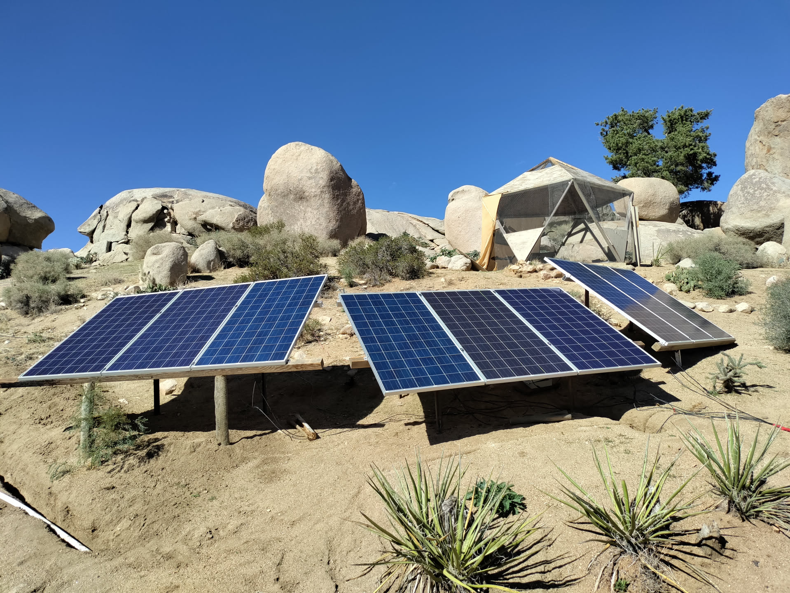

Field Report 001
Solar at the Command Center
Six 395-watt Talesun panels, a 16-cell LiFePO₄ battery, and the afternoon state of the system that supports computers, networking, and communications.
Read the observation →System Record
Solar generation, battery storage, electrical loads, protection, temperature, and the systems that depend on power.
1 field report published · technical source record maintained in the workbook


Field Report 001
Six 395-watt Talesun panels, a 16-cell LiFePO₄ battery, and the afternoon state of the system that supports computers, networking, and communications.
Read the observation →Future Energy Records
Inventory forming
Photographs and equipment records will be added only after each system is observed directly.
Monitoring
Home Assistant graphs can later show how generation and load change through the day.
Cross-system
Remote radios, cameras, sensors, and network equipment all connect energy with communications.